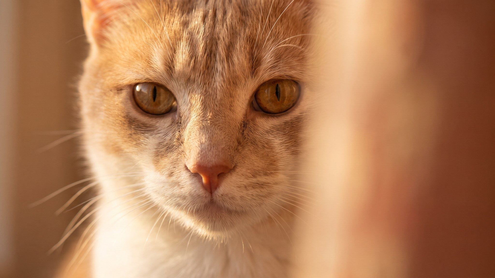

Открываешь дверь в ванную, а наполнитель уже по всему полу, иногда и в коридоре. Кошка провела у лотка добрых две минуты и явно довольна результатом. За этим поведением нет вредности: у него есть вполне конкретные причины, и большинство из них решаются сменой лотка или наполнителя. Ниже 6 причин и что менять под каждую.
🐾 Поставьте приложение заранее
Первая помощь, дневник здоровья и AI-ветеринар 24/7 — в одном месте. Бесплатно: установите, пока не понадобилось.
Установить AnimaLife → Открыть в MAX →
У вас iPhone? AnimaLife есть в App Store
Закапывать продукты жизнедеятельности: это инстинкт, который кошки сохранили от диких предков. Способ скрыть запах от хищников и не обозначать своё присутствие на территории. У домашних кошек инстинкт никуда не делся, просто теперь он направлен на наполнитель. Само по себе копание нормально. Проблема возникает, когда копание становится избыточным, занимает несколько минут и заканчивается горой рассыпанного наполнителя за бортом.
1. Лоток слишком маленький или с низкими бортами. Кошка копает в полный замах лапы. Если борт ниже 15 см, наполнитель просто вылетает через край. Стандартный лоток 40х30 для среднего кота мал: нужно минимум 50х40, а высота борта от 20 см.
2. Неправильная глубина наполнителя. Оптимальный слой около 5 см. Меньше: кошке не хватает, она роет до дна и скребёт пластик, это провоцирует ещё больше движений. Больше 8–10 см: наполнитель легко выбрасывается при каждом взмахе.
3. Не тот тип или текстура наполнителя. Мелкозернистый силикагель или очень лёгкие древесные гранулы разлетаются при малейшем движении. Некоторым кошкам не нравится текстура: они роют дольше и агрессивнее, пытаясь «обустроить» место под себя. Попробуйте комкующийся средней фракции: он тяжелее и хуже разлетается.
4. Азарт и избыток энергии. Молодые кошки и котята иногда превращают поход в туалет в игру: прыжки, интенсивное копание, разбрасывание гранул как конфетти. Больше активных игр в течение дня обычно снижает такой азарт к вечеру.
5. Кошка «перекапывает» из-за чистоплотности. Есть кошки, которые не уйдут, пока не закопают всё идеально. Если лоток недостаточно чист, они роют сильнее и дольше. Чистка раз в 1–2 дня плюс полная смена наполнителя раз в неделю убирает эту причину у большинства.
6. Стресс или конкуренция за лоток. В многокошачьих домах один лоток на двух кошек создаёт очередь и напряжение. Кошка торопится, копает хаотично. Правило: лотков должно быть на один больше, чем кошек (N+1). Один лоток для одной кошки тоже может стать источником стресса, если стоит в шумном или проходном месте.
🐾 Что делать, если что-то пойдёт не так
AnimaLife подскажет первые шаги при отравлении, травме, перегреве или укусе — ещё до того, как вы доедете до врача. Пусть будет под рукой.
Открыть первую помощь → Открыть в MAX →
У вас iPhone? AnimaLife есть в App Store
🐾 Понравился разбор?
Подпишитесь на канал — каждый день разбираем по одному тревожному симптому у кошек и собак: что в пределах нормы, а когда пора к врачу. Подпишитесь, чтобы не пропустить разбор, который может спасти здоровье вашего питомца.
Если кошка резко начала копать намного дольше обычного, и при этом изменилась частота посещений туалета, поза или поведение вне лотка, это стоит обсудить с ветеринаром. Само по себе разбрасывание наполнителя в большинстве случаев бытовая, а не медицинская история. Но резкие перемены в ритуалах туалета бывают сигналом, который лучше не игнорировать.
Материал носит информационный характер и не заменяет очную консультацию ветеринара.